NZLS Workshop Day
Session 2: Introduction to R and RStudio
Joshua Wilson Black ![]()
Te Kāhui Roro Reo | New Zealand Institute of Language, Brain and Behaviour
Te Whare Wānanga o Waitaha | University of Canterbury
2024-12-11
Overview
Overview
- Motivations (Why am I doing this?)
- What is R? What is RStudio?
- A realistic(ish) example
- How do I get help?
Motivations
I never asked for this!
Reproducibility
- Important for you
- Review comes back after six months, you get to it in two months, but now you have to regenerate your results from scratch and you can’t figure out how.
- Another researcher wants to collaborate and extend your idea, but you can’t retrace your steps. Opportunity lost!
- Important for the rest of us
- Provides a reliable record for other researchers to retrace your steps.
- Protection against (some!) scientific fraud.
- We need clear step-by-step instructions from data collection to final analysis.
- i.e. a computer programme!
For research fraud horror stories see https://retractionwatch.com/
Spreadsheet hell
- Data analysis in a spreadsheet programme (e.g. Excel) is not step-by-step.
- Spreadsheets allow direct manipulation of data (e.g. here)
- Automatic conversion: (sometimes) good for business not for scientific research.
- “Scientists rename human genes to stop Microsoft Excel from misreading them as dates” (link)
- Many more horror stories are collected here
Hieronymus Bosch, The Descent of Christ into Hell, CC0, via Wikimedia Commons (source)
{kind=link}
The dream
- Preregistration of planned analysis.
- Open data (as much as ethical).
- A plain text file which contains all steps to get from the open data to your results in a commonly used programming language.
- Sharing of other analytic methods which were tried.
- Human-readable commentary alongside the code.
- An example: https://osf.io/m8nkh/
What is R? What is RStudio?

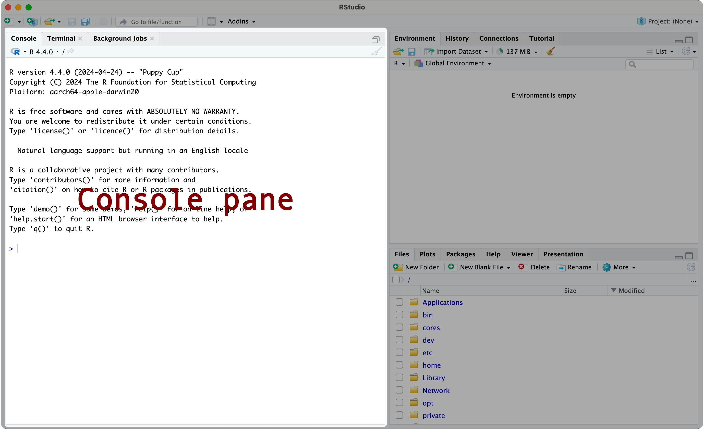
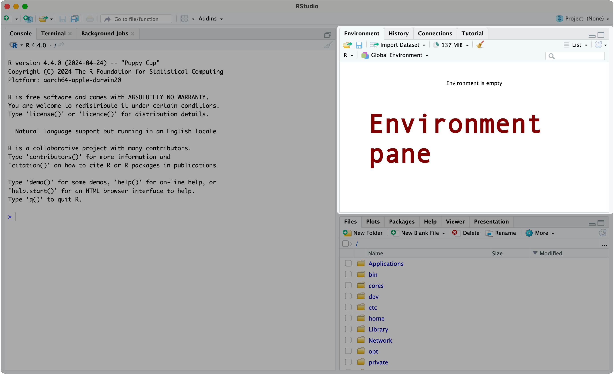
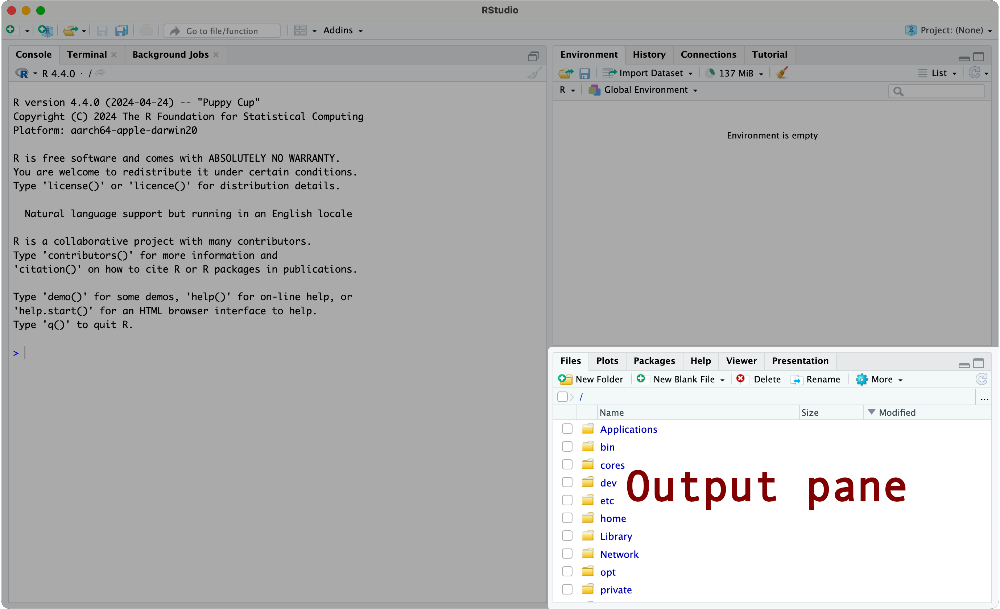
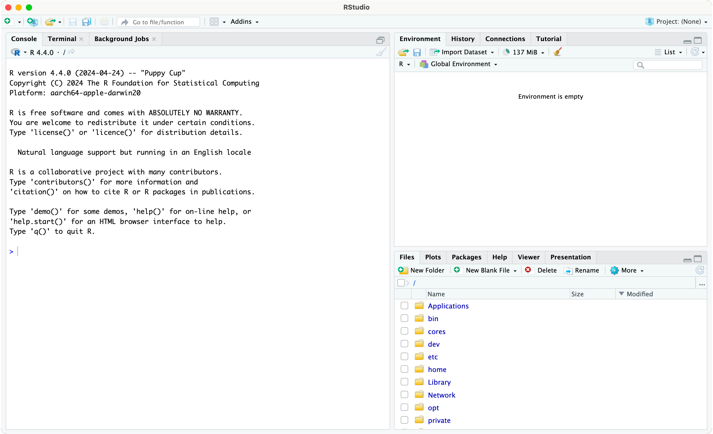
Ctrl + Shift + N

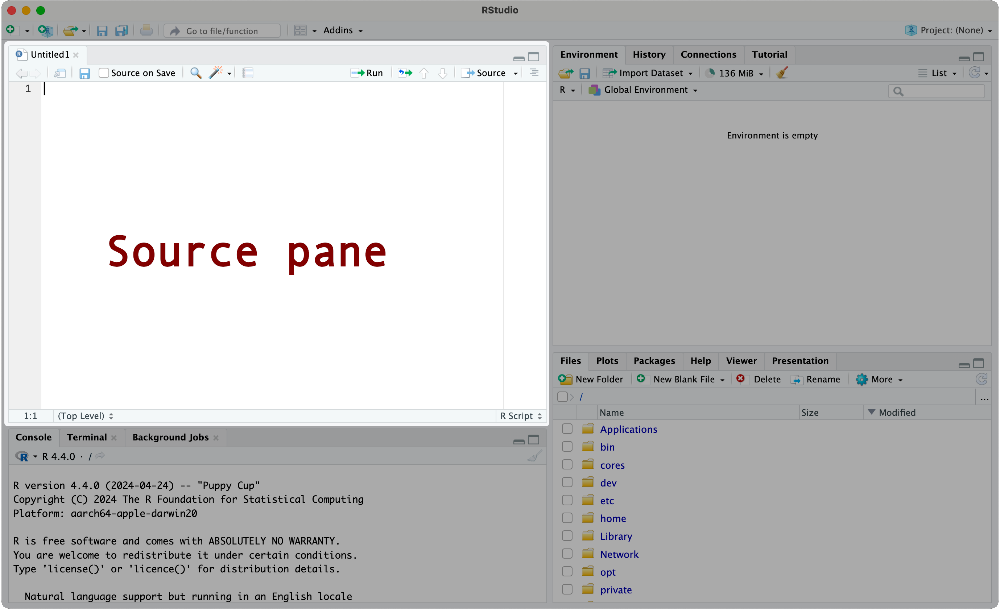
Avoiding bad habits
- Change default settings (
Tools > Global Options).
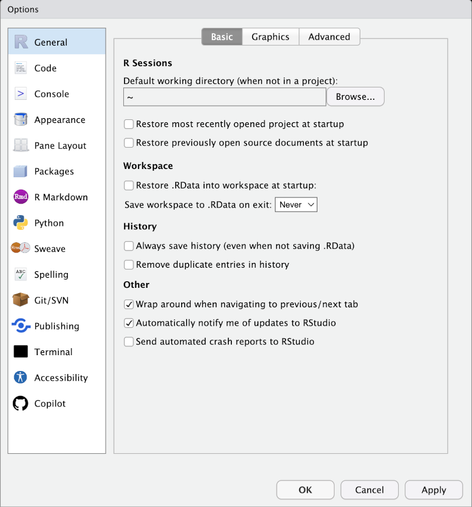
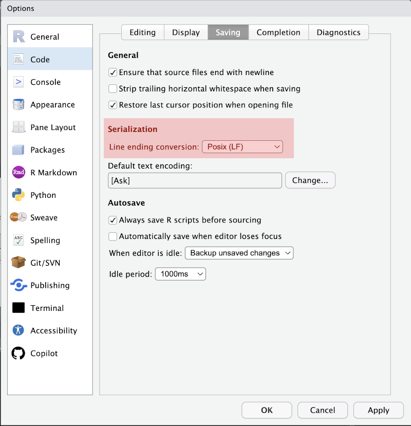
For reasons, see: https://r4ds.hadley.nz/workflow-scripts.html
RStudio projects
- Open an RStudio project (
File > New project) - Give it a name like
nzls_workshopand store it in your documents folder. - A RStudio project is a directory (folder) which contains everything you need for a data analysis project.
- Use projects!
First steps in R
- Go to the console pane.
- You can enter code after the
> - Let’s start simple: type ‘
2 + 2’ and press enter.
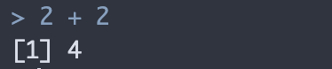
🥳🥳🥳🥳🥳
Help! I’m bored!
R scripts
- The console can be very useful for small tasks.
- An R script allows us to keep a step-by-step record.
- Open a new R script (Ctrl + Shift + N, or
File > New File > R Script)
More maths
- Run the line you are currently on by pressing ‘Ctrl + Enter’
- Output will appear in the console pane.
- Final statement produces an error
Help! I just see a ‘+’!
- If you enter an incomplete statement, R will wait for you to complete it in the console pane.
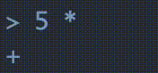
- Two options:
- Complete the statement in the console.
- Enter “Ctrl + C” to escape.
Functions
- Functions take input(s) and produce an output.
- The function’s name is followed by the input(s) inside brakets.
- The inputs are called arguments
?before function name produces help (in output pane)
Logic
- Statements can be
TRUEorFALSE - Combine multiple statements with ‘and’ (‘
&’) or ‘or’ (|) - Useful for filtering data
Vectors
- Data isn’t just one or two numbers…
- Vectors allow us to combine many observations.
- The
cstands for “combine”. - All the entries in a vector must be of the same type.
- A vector counts as a single argument to a function.
Variables
- We want to reuse the same data multiple times
- Variables are the solution.
- Variables associate a name with an object using ‘
<-’
- Look in the environment pane
- Your variable is there now.
Data frames
- How do we associate multiple data points from the same individual?
- Data frames
- Rows are ‘observations’
- Columns are ‘variables’ 🫤🫤🫤🫤🫤
- NB: Statements can go across multiple lines.
Accessing data
View(toddlers): a spreadsheet-style view of data.- Square brackets give access to portions of the data.
- Why two numbers for data frames?
Accessing data with names
- Use ‘
$’ to access columns in a data frame.
Accessing data with vectors
- Use of logical statements lets us filter data.
- Logical statements produce ‘logical vectors’.
There’s a package for that!
R packages
- Most problems can be solved with a package.
- Packages contain R code and data for solving specific problems.
- We install packages with
install.packages(). - Packages are loaded with
library(). - Sometimes they take a while to install!
The tidyverse
- The
tidyverseis a popular collection of packages. - It includes, e.g.:
dplyr: functions for data filtering and transformation.ggplot2: a popular package for data visualisation.readr: functions for reading and writing data.stringr: functions for manipulating strings.
- Code written with
tidyversepackages has a different style. (…better)
Pause
- We’ve covered a lot!
- Getting around RStudio
- R as a calculator
- Functions
- Logical statements
- Vectors and variables
- Data frames
- Accessing and filtering data
- R packages
- It’ll take a while to remember this material.
😮💨
A realistic(ish) example
Get some data
- We’ve borrowing data from (Mattingley et al. 2024).
- Download the file here: https://osf.io/ucx8n
- Put the data file inside your project folder.
- Start a new script (name it
protolexicon.R)- Ctrl + Shift + N
Data inspection (text)
read_tsv()loads ‘tab separated values’ (simlar to a.csvfile)summary()tells us about some of the variables.
Data inspection (visualise)
hist()is a built-in function for making histograms.
Data inspection (visualise)
Filter
Chaining functions
# Chaining functions together with pipes.
wellform_filtered <- wellform |>
filter(reactionTime < 5) |>
select(
workerId, stimulus, word,
enteredResponse, reactionTime, score.shortv
) |>
rename(
participant = workerId,
response = enteredResponse,
reaction_time = reactionTime,
phonotactic_score = score.shortv
)- Pipes send output of a function to the next function.
- Commonly used in
tidyversestyle.
Visualise again
- More on visualisation later in the day.
Visualise again
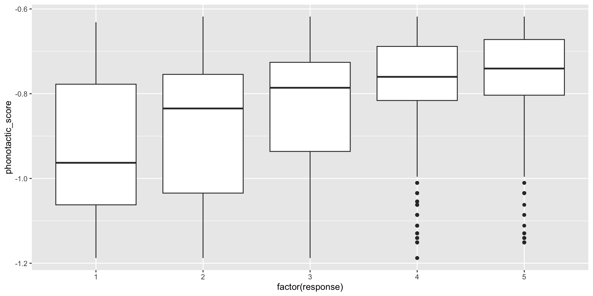
Model
- Let’s fit a model using the built-in
lm()function.
Model
Call:
lm(formula = response ~ phonotactic_score + reaction_time, data = wellform_filtered)
Residuals:
Min 1Q Median 3Q Max
-3.0752 -0.8669 0.1387 1.0105 2.8295
Coefficients:
Estimate Std. Error t value Pr(>|t|)
(Intercept) 6.16334 0.11274 54.67 <2e-16 ***
phonotactic_score 3.53412 0.12287 28.76 <2e-16 ***
reaction_time 0.04016 0.02039 1.97 0.0489 *
---
Signif. codes: 0 '***' 0.001 '**' 0.01 '*' 0.05 '.' 0.1 ' ' 1
Residual standard error: 1.217 on 4327 degrees of freedom
Multiple R-squared: 0.1605, Adjusted R-squared: 0.1602
F-statistic: 413.8 on 2 and 4327 DF, p-value: < 2.2e-16Plot predictions
# Get predictions from model.
# Step 1. Decide what we want predictions for. In this case,
# the full range of phonotactic scores at the mean value for
# reaction time.
to_predict <- data.frame(
phonotactic_score = seq(-1.2, -0.6, by = 0.01),
reaction_time = mean(wellform_filtered$reaction_time)
)
# Step 2: Get predictions using the `predict()` function.
model_predictions <- predict(
wellform_fit,
newdata = to_predict,
se.fit = TRUE
)
# Step 3: add predictions and 95% confidence intervals to the `to_predict` data
# frame.
to_predict$prediction <- model_predictions$fit
to_predict$upper <- model_predictions$fit + 1.96 * model_predictions$se
to_predict$lower <- model_predictions$fit - 1.96 * model_predictions$se
# Step 4: visualise again
to_predict |>
ggplot(
aes(
x = phonotactic_score,
y = prediction,
ymin = lower,
ymax = upper
)
) +
geom_ribbon(alpha = 0.4) +
geom_line()Plot predictions
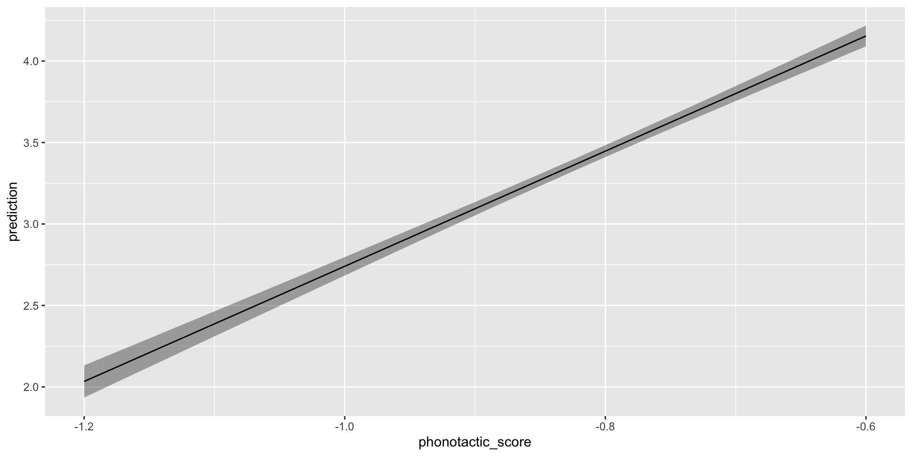
Pause again
- We have:
- loaded some real data,
- inspected it,
- visualised it,
- filtered it,
- fit a model, and
- plotted model predictions.
- Every decision is recorded in a script.
- This is reproducible
Getting help
Documentation
- For help with a function, add
?before its name in the console pane. - Packages often come with ‘vignettes’
- e.g. run
vignette("dplyr", package="dplyr")in console.
- e.g. run
- Many packages host their documentation online.
Peers
- Usually there is a some expertise around you, ask other students and academics.
- There are many online tutorials (text and video).
- Check for public code from papers you are using in your research.
Resources
- Winter (2019): Statistics for Linguists: An Introduction Using R. New York: Routledge.
- An excellent intro to states for linguists.
- R for Data Science: https://r4ds.had.co.nz/
- A general introduction to data science using the
tidyverse.
- A general introduction to data science using the
- https://swcarpentry.github.io/r-novice-gapminder/
- Introduction to R and Rstudio for reproducible science.
- https://nzilbb.github.io/statistics_workshops
- NZILBB statistics workshops (work in progress)
AI coding assistants
- Be very careful! Output always looks good.
- Often worse for R than for more popular languages.
- https://claude.ai works quite well.
- Standard problem solving tips apply:
- Break down the problem into small steps.
- Test each step yourself to make sure it’s doing what you think.
- You can also ask for explanations of code blocks from elsewhere.
Summary
Summary
- Why are we doing this?
- Basics of R and RStudio
- A realistic(ish) example
- How to get help.
References
Allaire, JJ, Yihui Xie, Christophe Dervieux, Jonathan McPherson, Javier Luraschi, Kevin Ushey, Aron Atkins, et al. 2024. rmarkdown: Dynamic Documents for r. https://github.com/rstudio/rmarkdown.
Mattingley, Wakayo, Forrest Panther, Simon Todd, Jeanette King, Jennifer Hay, and Peter J. Keegan. 2024. “Awakening the Proto-Lexicon: A Proto-Lexicon Gives Learning Advantages for Intentionally Learning a Language.” Language Learning 74 (3): 744–76. https://doi.org/10.1111/lang.12635.
Müller, Kirill. 2020. here: A Simpler Way to Find Your Files. https://CRAN.R-project.org/package=here.
R Core Team. 2024. R: A Language and Environment for Statistical Computing. Vienna, Austria: R Foundation for Statistical Computing. https://www.R-project.org/.
Wickham, Hadley, Mara Averick, Jennifer Bryan, Winston Chang, Lucy D’Agostino McGowan, Romain François, Garrett Grolemund, et al. 2019. “Welcome to the tidyverse.” Journal of Open Source Software 4 (43): 1686. https://doi.org/10.21105/joss.01686.
Winter, Bodo. 2019. Statistics for Linguists: An Introduction Using R. New York: Routledge. https://doi.org/10.4324/9781315165547.
Xie, Yihui, J. J. Allaire, and Garrett Grolemund. 2018. R Markdown: The Definitive Guide. Boca Raton, Florida: Chapman; Hall/CRC. https://bookdown.org/yihui/rmarkdown.
Xie, Yihui, Christophe Dervieux, and Emily Riederer. 2020. R Markdown Cookbook. Boca Raton, Florida: Chapman; Hall/CRC. https://bookdown.org/yihui/rmarkdown-cookbook.

Comments
#will be ignored by R.